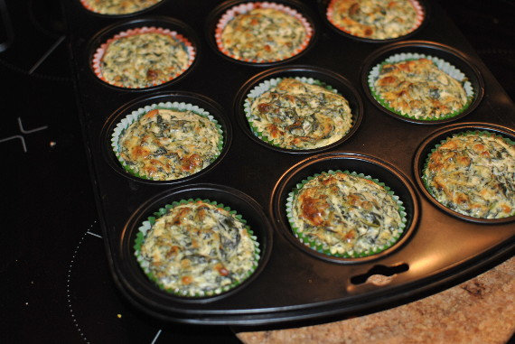

Spinat-Ricotta-Törtchen

- Zubereitung: ca. 20 Minuten
- Backen: ca. 35 Minuten
- Für 12 Muffins
Zutaten
- 450 g TK-Blattspinat
- 3 EL Pinienkerne
- 40 g Parmesan
- 1/2 Bund Dill
- 2 Eier
- 1 Eigelb
- 500 g Ricotta
- 100 g saure Sahne
- Muskatnuss
Zubereitung
- Den Spinat auftauen lassen, ausdrücken und fein hacken. Die Pinienkerne grob hacken, dann in einer trockenen Pfanne ohne Fett anrösten. Den Parmesan reiben, den Dill fein hacken und den Backofen auf 180° Celsius (Umluft: 160° Celsius) vorheizen.
- Die Eier und das Eigelb verquirlen, Ricotta und saure Sahne dazugeben und dann mit dem Mixer cremig schlagen. Dill, Spinat, Parmesan und Pinienkerne unterrühren. Mit Salz, Pfeffer und Muskat abschmecken.
- Die Mulden des Muffin-Blechs einfetten, die Spinatmasse in Förmchen füllen. Die Törtchen im Ofen 30 bis 35 Minuten backen. Leicht abkühlen lassen, stürzen und sofort servieren.